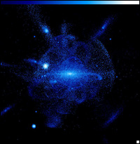

August 16, 2008
|
+ enlarge  |
| A theoretical model of a galaxy like the Milky Way, showing trails of stars torn from disrupted satellite galaxies that have merged with the central galaxy. The structures seen in the SDSS-II star maps support this prediction of a complicated outer Galaxy. The region shown is about one million light years on a side; the sun is just 25,000 light years from the center of the Galaxy and would appear close to the center of this picture. (Credit: K. Johnston, J. Bullock) |
The halo of stars that envelops the Milky Way galaxy is like a river delta criss-crossed by stellar streams large and small, according to new data from the Sloan Digital Sky Survey (SDSS-II). While the largest rivers of this delta have been mapped out over the last decade, analysis of the new SDSS-II map shows that smaller streams can be found throughout the stellar halo, said Kevin Schlaufman, a graduate student at the University of California at Santa Cruz.
Schlaufman reported his results today at an international symposium in Chicago, titled "The Sloan Digital Sky Survey: Asteroids to Cosmology." Over the last three years, Schlaufmann explained, the SEGUE survey of SDSS-II has measured the motions of nearly a quarter million stars in selected areas of the sky. A careful search for groups of stars at the same velocity turned up 14 distinct structures, 11 of them previously unknown.
"Even with SEGUE, we are still only mapping a small fraction of the Galaxy," said Schlaufman, "so 14 streams in our data implies a huge number when we extrapolate to the rest of the Milky Way." If each velocity structure were a separate stream, Schlaufman explained, there would be close to 1000 in the inner 75,000 light years of the Galaxy. However, these structures could arise from a smaller number of streams that are seen many times in different places.
"A jumble of pasta," is the way Columbia University researcher Kathryn Johnston described her theoretical models of the Milky Way's stellar halo. In a review talk at the symposium, Johnston explained how dwarf galaxies that pass close to the Milky Way can be stretched by gravitational tides into spaghetti-like strands, which wind around the Galaxy as stars trace out the same orbital paths at different rates.
"In the center of the Galaxy, these stellar strands crowd together and you just see a smooth mix of stars," said Johnston. "But as you look further away you can start to pick out individual strands, as well as features more akin to pasta shells that come from dwarfs that were on more elongated orbits. By looking at faint features, Kevin may be finding some of the 'angel hair' that came from smaller dwarfs, or ones that were destroyed longer ago."
Heidi Newberg of Rensselaer Polytechnic Institute and her thesis student Nathan Cole have been trying to follow some of the larger strands as they weave across the sky. "It's a big challenge to piece things together," said Cole, "because the stream from one dwarf galaxy can wrap around the Galaxy and pass through streams of stars ripped from other dwarf galaxies."
Toward the constellation Virgo, where SDSS images revealed an excess of stars covering a huge area of sky, Newberg finds that there are at least two superposed structures, and possibly three or more. The SEGUE velocity measurements can separate systems that overlap in sky maps, Newberg explained in her symposium talk. "Part of what we see toward Virgo is a tidal arm of the Sagittarius dwarf galaxy, whose main body lies on the opposite side of the Milky Way, but we don't know the origin of the other structures. There really aren't enough pasta varieties to describe all the structures we find."
In addition to stellar streams, astronomers searching the SDSS data have found 14 surviving dwarf companions of the Milky Way, including two new discoveries announced today at the symposium by Gerard Gilmore of Cambridge University. These satellite galaxies are orbiting within the halo of invisible dark matter whose gravity holds the Milky Way itself together. Most of them are much fainter than the ten satellites known prior to the SDSS.
Because even the SDSS can only detect these ultra-faint dwarfs if they are relatively nearby, there could be several hundred more of them further out in the Milky Way's dark halo, according to independent analyses by graduate students Sergey Koposov, of the Max Planck Institute for Astronomy in Heidelberg, Germany, and Eric Tollerud, of the University of California at Irvine. "Even so," said Koposov, "we expect that the number of dark matter clumps is much larger than that, so something must prevent the smaller clumps from gathering gas and forming stars."
The SDSS dwarfs have far fewer stars than the previously known satellites, noted Gilmore, but they have similar spatial extents, and the stars within them move at similar speeds. "I think the internal dynamics of these tiny galaxies may be hard to explain with our conventional ideas about dark matter," said Gilmore.
"The SDSS has taught us a huge amount about the Milky Way and its neighbors," said Johnston, who is pleased to see some of the predictions of her models confirmed by the new data. "But we're still just beginning to map the Galaxy in a comprehensive way, and there's a trove of discoveries out there for the next generation of surveys, including the two new Milky Way surveys that will be carried out in SDSS-III."
Funding for the SDSS and SDSS-II has been provided by the Alfred P. Sloan Foundation, the Participating Institutions, the National Science Foundation, the U.S. Department of Energy, the National Aeronautics and Space Administration, the Japanese Monbukagakusho, the Max Planck Society, and the Higher Education Funding Council for England. The SDSS Web Site is http://www.sdss.org/.
SDSS is managed by the Astrophysical Research Consortium for the Participating Institutions. The SDSS-II Participating Institutions are the American Museum of Natural History, Astrophysical Institute Potsdam, University of Basel, University of Cambridge, Case Western Reserve University, University of Chicago, Drexel University, Fermilab, the Institute for Advanced Study, the Japan Participation Group, Johns Hopkins University, the Joint Institute for Nuclear Astrophysics, the Kavli Institute for Particle Astrophysics and Cosmology, the Korean Scientist Group, the Chinese Academy of Sciences (LAMOST), Los Alamos National Laboratory, the Max-Planck-Institute for Astronomy (MPIA), the Max-Planck-Institute for Astrophysics (MPA), New Mexico State University, Ohio State University, University of Pittsburgh, University of Portsmouth, Princeton University, the United States Naval Observatory, and the University of Washington.